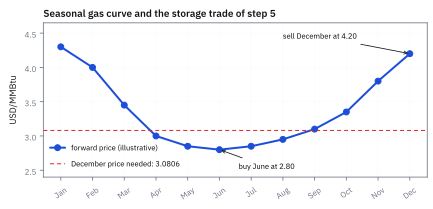
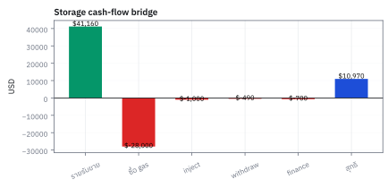
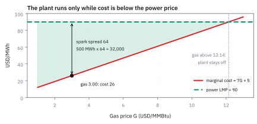
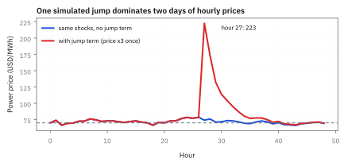
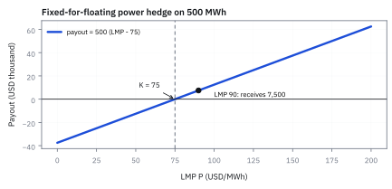
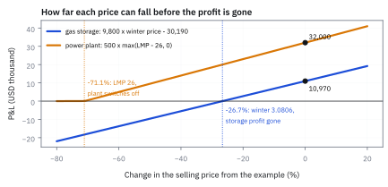

23.2 Commodity Derivatives: Gas and Power
storage, seasonal basis และ spike risk ในตลาดพลังงานสหรัฐฯ
ซื้อของวันนี้ 2.80 USD แล้วขายหน้าร้อน 3.20 USD ฟังดูเหมือนกำไร. แต่ถ้าค่าฝากกับขนส่ง 0.45 USD คุณเหลือเท่าไร?
เฉลย: ขาดทุน 0.05 USD. ราคาไกลขึ้นอย่างเดียวไม่พอ ต้องชนะต้นทุนและข้อจำกัดของที่เก็บด้วย.
สัญญาที่ผูกกับสินค้าเรียก commodity derivative. สิทธิ์เลือกเก็บหรือปล่อยสินค้าตามความจุเรียก storage option. ก๊าซเข้าตู้เก็บได้ แต่ไฟฟ้าต้องอาศัยระบบเก็บพลังงานที่มีต้นทุนและความจุจำกัด จึง hedge คนละแบบ.
ศัพท์ของตลาด gas และ power
- commodity
- สินค้าที่มีหน่วยและคุณภาพมาตรฐาน เช่น natural gas หรือไฟฟ้า ใช้เป็น underlying ของ forward, futures, swap และ option
- natural gas
- เชื้อเพลิงที่ซื้อขายเป็นหน่วยพลังงาน MMBtu และส่งผ่าน pipeline ใช้ผลิตไฟฟ้า อุ่นอาคาร และเป็น feedstock ของอุตสาหกรรม
- Henry Hub
- จุดอ้างอิงราคาก๊าซที่ Louisiana และเป็น delivery point ของสัญญา NYMEX ใช้เป็น benchmark แต่ไม่จำเป็นต้องเท่ากับราคาทุกพื้นที่
- futures
- สัญญามาตรฐานใน exchange ที่กำหนดปริมาณ delivery และ expiry พร้อม mark-to-market รายวัน ใช้ hedge แต่ต้องบริหาร margin และ basis
- swap
- สัญญาแลก cash flow เช่น fixed price กับ floating commodity index ในแต่ละเดือน ใช้ทำงบต้นทุนให้ใกล้คงที่โดยไม่ต้องรับของจริง
- storage option
- สิทธิ์ในการซื้อ commodity เข้า storage เมื่อราคาต่ำและถอนออกเมื่อราคาสูง ใช้สร้างมูลค่าจาก timing แต่ถูกจำกัดด้วย capacity, rate และ loss
- convenience yield
- ประโยชน์เชิงเศรษฐกิจจากการมีของจริงพร้อมใช้ เช่น ป้องกันโรงงานหยุดเดิน ใช้แยก cost of carry ของ commodity ที่เก็บได้ออกจากราคา futures
- basis
- ส่วนต่างระหว่างราคาพื้นที่หรือสินค้าจริงกับราคา benchmark ใช้วัดความเสี่ยงที่ hedge ด้วย Henry Hub หรือ index ไม่ตรงกับจุดส่งมอบ
- electricity
- พลังงานที่ต้อง balance generation กับ load เกือบ real time และเก็บในปริมาณมากไม่ได้ ใช้กำหนดความพิเศษของ power derivative
- locational marginal price (LMP)
- ราคาที่สะท้อนต้นทุนหน่วยสุดท้าย ณ node รวม energy, congestion และ loss ใช้เป็น floating index ของสัญญา power ในตลาดเช่น PJM
- heat rate
- ปริมาณเชื้อเพลิง MMBtu ที่ต้องใช้ผลิตไฟฟ้า 1 MWh ใช้แปลง gas price เป็น marginal generation cost ของโรงไฟฟ้า
- spark spread (SS)
- ส่วนต่างระหว่างรายรับจากไฟฟ้ากับต้นทุนก๊าซที่แปลงด้วย heat rate และต้นทุนผันแปรอื่น ใช้ประเมิน economics และ dispatch option ของ gas plant
- non-storable
- ลักษณะของสินค้าที่เก็บไว้ข้ามเวลาได้ยากหรือแพงมาก ไฟฟ้าจึงต้องผลิตและใช้ใกล้เวลาเดียวกัน ใช้รักษาสมดุล grid ไม่ใช่ทำ inventory ปกติ
- hedge
- position ที่เปิดสวนกับ exposure หลักเพื่อลดความผันผวนของ cash flow ใช้ lock งบต้นทุนแต่ไม่ลบ basis หรือ volume risk ทุกชนิด
- marginal cost (MC)
- ต้นทุนเพิ่มของการผลิตไฟฟ้าอีกหนึ่ง MWh ใช้ตัดสินใจ dispatch เมื่อเทียบกับ LMP
- New York Mercantile Exchange (NYMEX)
- exchange ที่มีสัญญา energy futures มาตรฐาน ใช้เป็นตลาดอ้างอิงของ Henry Hub natural gas futures และจัดกติกา delivery กับ margin
- PJM Interconnection (PJM)
- ผู้ดูแลระบบส่งและตลาดไฟฟ้าหลายรัฐทางตะวันออกของสหรัฐฯ ใช้คำนวณ LMP และ balance การผลิตกับ load ตามพื้นที่
- megawatt (MW)
- หน่วยกำลังเท่ากับพลังงานหนึ่ง megawatt-hour ต่อหนึ่งชั่วโมง ใช้บอกขนาดโรงไฟฟ้าและต้องคูณเวลาก่อนจะได้พลังงาน MWh
สัญกรณ์และหน่วย
| สัญลักษณ์ | ความหมาย | หน่วย |
|---|---|---|
| $G_t$ | ราคาก๊าซ ณ เวลา t | USD/MMBtu |
| $P_t$ | ราคาพลังงานหรือ LMP ณ เวลา t | USD/MWh |
| $F_0(T)$ | ราคา forward วันนี้สำหรับ delivery ที่ T | USD ต่อหน่วย commodity |
| $Q$ | ปริมาณตามสัญญาหรือปริมาณ hedge | MMBtu หรือ MWh ตาม underlying |
| $I_t$ | inventory ก๊าซใน storage | MMBtu |
| $a,b$ | injection และ withdrawal rate | MMBtu ต่อวัน |
| $\ell$ | fraction ของก๊าซที่สูญเสียหรือ shrinkage ใน storage | ไม่มีหน่วย |
| $h$ | heat rate ของโรงไฟฟ้า | MMBtu/MWh |
| $c_{var}$ | ต้นทุนผันแปรนอกเหนือจากก๊าซ | USD/MWh |
| $r$ | อัตรา financing ต่อปีที่ใช้ carry inventory | ต่อปี |
| $T$ | เวลาจากวันนี้ถึง delivery หรือ withdrawal | ปี |
| $y$ | convenience yield ของสินค้าโภคภัณฑ์ต่อปี | |
| $K^*$ | ราคาคงที่ยุติธรรมในสัญญา commodity swap | |
| $s_t$ | สถานะการทำงานของโรงไฟฟ้า (0 คือปิด, 1 คือเปิด) | |
| $C_u, C_d$ | ต้นทุนการเปิดเครื่อง (ramp-up) และปิดเครื่อง (ramp-down) ของโรงไฟฟ้า |
ที่มาที่ไป: สินค้าที่ต้องเก็บ และสินค้าที่เก็บได้ด้วยต้นทุนและข้อจำกัดสูง
derivative บนสินค้าโภคภัณฑ์มีตรรกะต่างจากบนหุ้นอย่างสิ้นเชิง เพราะของจริงต้องมีที่เก็บและต้องส่งมอบ
หุ้นเก็บไว้ฟรีในบัญชี แต่น้ำมันต้องเช่าถัง และเมื่อถังทั่วโลกเต็ม ราคาสัญญาที่ใกล้ครบกำหนด อาจติดลบได้จริง ซึ่งเกิดขึ้นในเดือนเมษายน 2020
ไฟฟ้าเป็นกรณีสุดขั้วกว่านั้นอีก เพราะเก็บแทบไม่ได้เลย ต้องผลิตและใช้พร้อมกัน ราคาจึงกระโดดหลายเท่าในไม่กี่ชั่วโมงเมื่อความต้องการพุ่ง
ผลคือโรงไฟฟ้าและถังเก็บมีค่าเหมือน option คือมีสิทธิ์เลือกจะเดินเครื่องหรือไม่เดิน และการประเมินมูลค่าของมันต้องใช้เครื่องมือจากบทที่ 13 ไม่ใช่การคำนวณกระแสเงินแบบเดิม
ศัพท์ประวัติศาสตร์และหน่วยงานกำกับดูแล
- Chicago Board of Trade (CBOT)
- ตลาด exchange สัญญาซื้อขายล่วงหน้าแห่งแรกของสหรัฐฯ ใช้เป็นศูนย์กลางซื้อขายสัญญา futures เพื่อช่วยให้เกษตรกรและผู้ค้า lock ราคาสินค้าเกษตรล่วงหน้าและลดความเสี่ยงจากผลผลิตตามฤดูกาล
- Federal Energy Regulatory Commission (FERC)
- หน่วยงานกำกับดูแลพลังงานระดับสหพันธรัฐของสหรัฐฯ ใช้กำหนดกฎเกณฑ์ระบบส่งก๊าซและสายส่งไฟฟ้าข้ามรัฐ เพื่อเปิดเสรีการแข่งขันในตลาดพลังงานและป้องกันการผูกขาด
ที่มาทางประวัติศาสตร์: จากตลาดสินค้าเกษตรสู่การเปิดเสรีก๊าซธรรมชาติและไฟฟ้า
จุดเริ่มต้นของสัญญา derivative สินค้าโภคภัณฑ์ไม่ได้เกิดจากห้องทดลองทางคณิตศาสตร์ แต่เกิดจากวิกฤตปากท้องของชาวนาและพ่อค้าในสหรัฐฯ ยุคศตวรรษที่ 19 ในอดีต เมื่อถึงฤดูเก็บเกี่ยว ผลผลิตข้าวสาลีและข้าวโพดจะทะลักเข้าสู่เมืองชิคาโกจนล้นท่าเรือ ราคาตกฮวบจนชาวนาต้องเททิ้งลงแม่น้ำ แต่พอถึงฤดูหนาวกลับเกิดภาวะขาดแคลนจนราคาพุ่งสูง พ่อค้าและเกษตรกรจึงรวมตัวกันตั้ง Chicago Board of Trade (CBOT) ขึ้นเมื่อปี ค.ศ. 1848 เพื่อสร้างสัญญา to-arrive ให้ตกลงราคากันล่วงหน้าได้
สำหรับก๊าซธรรมชาติ สหรัฐฯ เคยคุมราคาปากบ่อเข้มงวดภายใต้กฎหมาย Natural Gas Act ปี 1938 เพื่อให้ประชาชนได้ใช้ของถูก ผลลัพธ์คือเกิดการขาดแคลนก๊าซอย่างหนักในทศวรรษ 1970 จนโรงเรียนและโรงงานต้องปิดตัวในฤดูหนาว รัฐสภาจึงทยอยเปิดเสรีจนกระทั่ง Federal Energy Regulatory Commission (FERC) ออกคำสั่ง Order 636 ในปี 1992 บังคับให้ท่อส่งก๊าซต้องแยกบริการขนส่งออกจากสัญญาซื้อขายก๊าซ ตลาดจึงต้องการเครื่องมือบริหารความเสี่ยงจนเกิดสัญญา Henry Hub futures บนตลาด NYMEX
ในฝั่งของไฟฟ้า การเปิดเสรีตามคำสั่ง FERC Order 888 ในช่วงปลายทศวรรษ 1990 ได้เปลี่ยนระบบผูกขาดของรัฐไปสู่ตลาดแข่งขันเสรีที่มี Locational Marginal Pricing (LMP) แต่ไฟฟ้ามีคุณสมบัติพิเศษคือเก็บสะสมในปริมาณมากไม่ได้ ความสมดุลของระบบต้องเกิดขึ้นวินาทีต่อวินาที เมื่ออุปสงค์พุ่งสูงในวันที่อากาศร้อนจัด ราคาไฟฟ้าจึงกระโดดจาก \$30 สู่หลายพันดอลลาร์ต่อ MWh ได้ในพริบตา model การเงินแบบดั้งเดิมที่ใช้กับหุ้นจึงล้มเหลวโดยสิ้นเชิงเมื่อนำมาใช้กับตลาดพลังงาน
ความจำเป็นในการบริหารโรงไฟฟ้าและคลังก๊าซในโลกเสรีนี้เอง ที่ผลักดันให้นักวิชาการและผู้ปฏิบัติงานอย่าง David Luenberger รวมถึง Martin Haugh และ Garud Iyengar จากมหาวิทยาลัย Columbia พัฒนาการประยุกต์ใช้ real options และ stochastic dynamic programming ขึ้นมา เพื่อช่วยให้วิศวกรและเทรดเดอร์สามารถตัดสินใจได้อย่างเป็นระบบว่า วันนี้ควรสูบก๊าซเข้าถังหรือปล่อยขาย และควรเดินเครื่องโรงไฟฟ้าหรือยอมดับเครื่อง
intuition: ทำไม commodity ไม่ใช่หุ้น
หุ้นหนึ่งหน่วยไม่เสื่อมพลังงานเมื่อถือไว้ แต่ก๊าซมีค่าที่เก็บ ค่าขนส่ง การรั่ว และที่เก็บจำกัด. ซื้อก๊าซหน้าร้อนเพื่อขายหน้าหนาวจึงมีต้นทุนจริง.
ไฟฟ้าเก็บเป็น inventory ขนาดใหญ่แทบไม่ได้. ราคาเลยเปลี่ยนตามความต้องการใช้, อากาศ, โรงไฟฟ้าหยุด และข้อจำกัดสายส่งพร้อมกัน.
สินค้าที่เก็บได้เริ่มคิดด้วย cash-and-carry: ราคาอนาคตต้องชดเชยเงินซื้อวันนี้กับค่าเก็บ. สินค้าที่เก็บไม่ได้ต้องดู forward curve และกติกาของตลาดเพิ่ม. derivative จึงอ้างอิงสถานที่ เวลา และคุณภาพ ไม่ใช่แค่ชื่อสินค้า.
ขั้นที่ 1 — นิยามของราคาล่วงหน้าเมื่อของเก็บได้ แต่เก็บแล้วมีต้นทุน
บรรทัดนี้เป็น ความสัมพันธ์โดยประมาณที่เรากำหนดขึ้น ไม่ใช่สมการที่ตรงเป๊ะ โครงของมันคือหัวข้อ 19.1 ทุกประการ คือทบต้นต้นทุนของการถือของไปวันส่งมอบ เพิ่มมาสองอย่าง ก้อนแรกคือค่าเก็บรักษา ซึ่งบวกเข้าไปเพราะมันเป็นต้นทุน ก้อนที่สองคือประโยชน์ของการมีของอยู่ในมือจริง ซึ่งลบออกเพราะมันเป็นรายได้แฝง ก้อนหลังนี้วัดตรง ๆ ไม่ได้ ต้องถอยหลังจากราคาตลาด จึงเป็นเหตุผลที่ใช้เครื่องหมายประมาณ และเป็นจุดที่แยกสินค้าโภคภัณฑ์ออกจากสินทรัพย์การเงินอย่างสิ้นเชิง
$F_0(T)$ คือ forward price USD/MMBtu; $G_0$ คือ spot gas price USD/MMBtu; $C_{store}(T)$ คือ present-value storage cost ต่อหน่วย; $r$ คือ financing rate ต่อปี; $Y_{conv}(T)$ คือมูลค่าประโยชน์จากการมีของจริงที่แปลงเป็น USD ต่อหน่วย ณ T แล้ว จึงลบจากราคาได้ ไม่ใช่อัตรา convenience yield ต่อปี
การพิสูจน์ cost of carry และ convenience yield จาก cash-and-carry arbitrage
พิสูจน์ความสัมพันธ์ระหว่าง spot, carry และ convenience yield ผ่านกลยุทธ์ cash-and-carry arbitrage ที่วางบนกระแสเงินสดจริง
กลไกที่ผูกราคาปัจจุบันกับราคาอนาคตไว้ด้วยกันคือกลยุทธ์ cash-and-carry โดยเริ่มที่เงินสุทธิเป็นศูนย์ กู้เงินมาเท่ากับค่าซื้อก๊าซ $G_0$ บวกค่าฝากคลังล่วงหน้า $U$ ซื้อก๊าซจริงเข้าถังแล้วทำสัญญา short forward ไว้ที่ราคา $F_0(T)$
ณ วันครบกำหนด $T$ ส่งมอบก๊าซจริงตามสัญญาเพื่อรับเงิน $F_0(T)$ แล้วนำเงินไปชำระหนี้เงินกู้พร้อมดอกเบี้ยทบต้น หากราคา forward สูงกว่ายอดหนี้ พ่อค้าทุกคนจะทำกำไรไร้ความเสี่ยงนี้จนราคา forward ถูกกดลงมา เงื่อนไขนี้จึงบีบให้ $F_0(T)$ ไม่เกินต้นทุนรวม
แต่สิ่งที่ทำให้สินค้าโภคภัณฑ์ต่างจากหุ้นคือการทำ reverse cash-and-carry ทำได้ยากมาก เพราะเราไม่สามารถยืมก๊าซจริงจากใต้ดินมาขายล่วงหน้าได้เมื่อคลังว่างเปล่า คนที่ถือก๊าซจริงจึงได้รับความคุ้มค่าจากการมีสินค้าพร้อมใช้ หรือ convenience yield ในอัตรา $y$
เมื่อกระจายอนุกรมรอบ $T=0$ จะเห็นโครงสร้างชัดเจนว่า ราคา forward คือราคา spot บวกดอกเบี้ยและค่าเก็บ ลบด้วยมูลค่าความคุ้มค่าของการถือของจริง หาก $y > r + u$ ราคาอนาคตจะต่ำกว่าราคาปัจจุบัน หรือเกิดภาวะ backwardation ทันที
ขั้นที่ 2 — payoff ของ fixed-for-floating swap
ผู้ใช้ก๊าซที่จ่าย fixed price K และรับ floating index จะได้หรือเสียส่วนต่างทุกหน่วยใน delivery period
$\Pi_T^{swap}$ เป็น USD P&L; $Q$ เป็น notional ของ MMBtu หรือ MWh; $F_T$ เป็นราคาดัชนี USD ต่อหน่วย ณ settlement; $K$ เป็น fixed strike USD ต่อหน่วย; เครื่องหมายบวกหมายถึง floating สูงกว่า fixed
$K$ คือราคาคงที่ที่ตกลงกันไว้ และ $F_T$ คือราคาตลาดตอนจบ เครื่องหมายบวกของ $Q$ หมายถึงฝั่งที่รับราคาลอยตัวและจ่ายราคาคงที่ จึงได้กำไรเมื่อราคาตลาดสูงกว่าที่ตกลงไว้ และขาดทุนเมื่อต่ำกว่า อีกฝั่งได้เครื่องหมายตรงข้ามทุกประการ
การกำหนดราคาคงที่ของสัญญา swap จาก forward curve
แปลงสัญญา swap ให้อยู่ในรูป portfolio ของสัญญา forward แล้วหาส่วนราคาคงที่ $K^*$ ที่ทำให้มูลค่าเริ่มต้นของสัญญามีค่าเป็นศูนย์
สัญญา swap ไม่ใช่ตราสารลึกลับใหม่ แต่คือมัดของสัญญา forward หลายช่วงเวลามารวมกัน ผู้ซื้อ swap ตกลงรับราคาตลาดลอยตัว $F_0(T_i)$ และจ่ายราคาคงที่ $K$ ทุกสิ้นงวด $T_i$ สำหรับปริมาณ $Q_i$ ในแต่ละเดือน
มูลค่าของฝั่งรับราคาลอยตัวคำนวณจากการคิดลด expected value ของราคา forward แต่ละงวดกลับมาเป็นเงินวันนี้ ในขณะที่มูลค่าของฝั่งจ่ายราคาคงที่คือการคิดลดกระแสเงินสด $K$ ในแต่ละงวดกลับมาด้วยอัตราดอกเบี้ยเดียวกัน
เพื่อให้สัญญาเริ่มต้นได้โดยไม่มีฝ่ายใดต้องควักเงินจ่ายล่วงหน้า มูลค่าของทั้งสองฝั่ง ณ วันเริ่มสัญญาต้องหักล้างกันพอดีเป็นศูนย์ การแก้สมการหา $K$ จึงให้ผลลัพธ์เป็นค่าเฉลี่ยถ่วงน้ำหนักของราคา forward ด้วยปริมาณและตัวคูณคิดลด
ตัวอย่างเช่น ปริมาณ 10,000 MMBtu ต่อเดือนเป็นเวลา 3 เดือน มีราคา forward ที่ 3.00, 3.60 และ 4.20 ดอลลาร์ ตัวคูณคิดลดเท่ากับ 0.995, 0.990 และ 0.985 จะได้ราคาคงที่ยุติธรรม $K^* = 3.6033$ ดอลลาร์ต่อ MMBtu พอดี
ขั้นที่ 3 — นิยามของสมการคลัง และข้อจำกัดที่ทำให้มันเป็นปัญหาจริง
บรรทัดนี้เป็น นิยาม ของกติกาทางกายภาพ ไม่ใช่ผลที่พิสูจน์ ปริมาณในคลังวันถัดไปเท่ากับวันนี้ บวกของที่อัดเข้าไปหลังหักการสูญเสีย ลบของที่ดึงออกมาซึ่งต้องดึงมากกว่าที่ได้จริงเพราะมีการสูญเสียเช่นกัน สองตัวคูณจึงอยู่คนละที่กันในสมการ ซึ่งเป็นจุดที่เขียนผิดกันบ่อย ข้อจำกัดสามข้อที่ตามมาคือสิ่งที่ทำให้ปัญหานี้ไม่ใช่ option ธรรมดา คลังมีขนาดจำกัด และอัดหรือดึงได้เร็วไม่เกินที่ท่อรับได้ ราคาวันนี้จึงกระทบสิ่งที่ทำได้ในวันหน้า ต่างจาก option ที่ตัดสินใจแยกกันได้
$I_t$ และ $I_{t+1}$ คือ inventory MMBtu; $x^{in}$ และ $x^{out}$ คือปริมาณ inject และ withdraw; $\eta_{in},\eta_{out}$ คือ efficiency ไม่มีหน่วย; $a_t,b_t$ คือ ขีดจำกัดปริมาณ MMBtu ต่อก้าว; ถ้าข้อมูลเป็น MMBtu/day ต้องคูณจำนวนวันในก้าวก่อน; $I_{max}$ คือ capacity MMBtu
ลองเก็บหนึ่งหน่วย: พรุ่งนี้เป็นมูลค่าเพิ่ม
เริ่มที่ถังว่างจุหนึ่งหน่วย ราคาอนาคตล็อกได้ที่ 4.20 USD ไม่มี loss หรือค่าดำเนินการ และเงินหนึ่ง USD โตเป็น 1.025 USD ในช่วงที่รอ
วันนี้จ่ายซื้อจึงติดลบ ส่วนมูลค่าที่ขายได้พรุ่งนี้เป็นบวกแล้วคิดลดกลับมา ถ้าสูตรลบมูลค่าอนาคตจะทำให้สินค้าที่ยิ่งมีค่าพรุ่งนี้กลับยิ่งไม่น่าเก็บ ซึ่งขัดกับกระแสเงินจริง
หากราคาอนาคตไม่รู้แน่ ต้องเฉลี่ย continuation value ภายใต้ valuation model ที่เลือก และ state ต้องรวมข้อมูลราคาหรือปัจจัยตลาดด้วย เขียนเฉพาะ inventory ใน V เพื่อย่อสัญกรณ์ ไม่ได้แปลว่าราคาไม่มีผล
$V_{\rm wait}$ คือมูลค่าของการไม่ทำอะไรเลย ซึ่งเป็นศูนย์เพราะไม่มีเงินเข้าออก
$V_{\rm fill}$ คือมูลค่าของการซื้อก๊าซอัดเข้าคลังวันนี้แล้วขายงวดหน้า จ่าย 2.80 วันนี้ และได้ 4.20 ในอีกหนึ่งงวด ซึ่งต้องคิดลดกลับมาก่อนจึงบวกกันได้
บรรทัดสุดท้ายเลือกทางที่ดีกว่า ตัวเลือกค่ามากกว่าคือสิ่งที่ทำให้คลังเป็น option ไม่ใช่สินทรัพย์ธรรมดา เพราะเจ้าของเลือกไม่ทำก็ได้
ขั้นที่ 4 — one-period storage decision
ในช่วงสั้น ๆ การถอนของให้รายรับราคาปลายทาง แต่ต้องหักราคาซื้อ ต้นทุนปฏิบัติการ และ carry ของ inventory
$V_t(I_t)$ คือ storage value USD; $P_t$ และ $G_t$ คือราคาขายและซื้อ USD ต่อหน่วย; $c_{in},c_{out}$ เป็นต้นทุน inject/withdraw ต่อหน่วย; $R$ คือ growth factor ของเงินตลอดหนึ่งก้าว จึงส่วนด้วยมันเพื่อคิดลด; การ maximize เลือก action ที่คุ้มที่สุดภายใต้ inventory constraint
แบ่งสิ่งที่จะเปรียบเทียบเป็นสองส่วน: $\Pi_t$ คือเงินสุทธิที่รับหรือจ่ายวันนี้ และ $H_t$ คือมูลค่าที่เหลือในอนาคตเมื่อคิดกลับมาวันนี้ ทั้งสองขึ้นกับปริมาณที่เลือก inject หรือ withdraw เพราะการตัดสินใจเปลี่ยนทั้งเงินวันนี้และ inventory $I_{t+1}$ จากนั้นเลือกการกระทำที่อนุญาตให้ผลรวมสูงที่สุด
การประเมินมูลค่าคลังก๊าซธรรมชาติด้วย dynamic programming บน binomial lattice
แสดงการคำนวณมูลค่าคลังก๊าซธรรมชาติตามแบบจำลองของ Haugh และ Iyengar บน binomial lattice ด้วย dynamic programming ทีละขั้นตอน
สมการ Bellman ของคลังก๊าซกำหนดให้มูลค่า ณ วันสิ้นสุดสัญญา $T$ เป็นศูนย์สำหรับทุกระดับก๊าซที่เหลือในคลัง จากนั้นคำนวณย้อนกลับทีละงวดโดยเปรียบเทียบกำไรจากการสูบเข้า ปล่อยออก หรืออยู่เฉย ๆ
ตัวแปรควบคุม $z$ แทนปริมาณที่ถอนออกจากคลัง หาก $z > 0$ แปลว่าถอนก๊าซออกไปขาย หาก $z \lt 0$ แปลว่าซื้อก๊าซเข้ามาอัดเก็บไว้ โดยปริมาณต้องไม่เกินอัตราท่อ $a_{\text{in}}, b_{\text{out}}$ และระดับคลังต้องอยู่ในช่วงศูนย์ถึงความจุ $C$
ในงวดที่หนึ่ง หากราคากระโดดขึ้นเป็น 4.50 ดอลลาร์ การถอนก๊าซหนึ่งหน่วยที่เก็บไว้จะได้กำไรสุทธิ 4.40 ดอลลาร์หลังหักค่าถอน 0.10 ดอลลาร์ หากราคาตกเหลือ 2.50 ดอลลาร์ การถอนจะได้กำไรสุทธิ 2.40 ดอลลาร์ expected value ภายใต้ความเสี่ยงเป็นกลางจึงเท่ากับ 3.40 ดอลลาร์
เมื่อคิดลดกลับมา ณ วันเริ่มต้นด้วยตัวคูณ 0.95 จะได้มูลค่าอนาคต 3.23 ดอลลาร์ หากตัดสินใจซื้อก๊าซเข้าคลังวันนี้ที่ราคา 3.00 ดอลลาร์บวกค่าอัด 0.10 ดอลลาร์ จะเหลือกำไรสุทธิ 0.13 ดอลลาร์ การมีคลังจึงสร้างมูลค่าจากความผันผวนของราคาได้จริง
ศัพท์ด้านการคำนวณ dynamic programming
- approximate dynamic programming (ADP)
- เทคนิค estimation เพื่อหาค่าใกล้เคียงของ value function ด้วย basis functions หรือ simulation ในการแก้ Bellman equation ใช้แก้ปัญหาการตัดสินใจหลายช่วงเวลาเมื่อมีตัวแปรหลายตัวเพื่อเลี่ยง curse of dimensionality
ข้อจำกัดทางกายภาพของคลังก๊าซ: depleted reservoir เทียบกับ salt cavern
ในทางปฏิบัติ คลังก๊าซธรรมชาติใต้ดินแบ่งออกเป็นสองประเภทหลักที่มีพฤติกรรมทางเศรษฐศาสตร์ต่างกันอย่างสิ้นเชิง ประเภทแรกคือ depleted reservoir หรือแหล่งก๊าซธรรมชาติเดิมที่ขุดเจาะจนหมดแล้ว คลังประเภทนี้มีขนาดความจุใหญ่มาก แต่มีข้อจำกัดเรื่องแรงดันและการซึมผ่านของชั้นหิน ทำให้สูบเข้าและถอนออกได้ช้า โดยทั่วไปจะสูบก๊าซเข้าได้เพียงปีละครั้งในฤดูร้อน และถอนออกขายในฤดูหนาว จึงมีลักษณะเป็น seasonal storage แบบรอบเดียวต่อปี
ประเภทที่สองคือ salt cavern ซึ่งสร้างโดยฉีดน้ำลงไปละลายชั้นเกลือใต้ดินจนกลายเป็นโพรง (solution mining) โครงสร้างผนังเกลือมีความแน่นหนาและทนต่อแรงดันสูงมาก ทำให้สามารถอัดก๊าซเข้าและถอนออกได้อย่างรวดเร็วภายในเวลาไม่กี่วัน salt cavern จึงสามารถหมุนรอบการใช้งาน (cycling) ได้มากถึง 6 ถึง 12 รอบต่อปี ผู้ดำเนินงานจึงสามารถใช้ประโยชน์จากความผันผวนของราคาระยะสั้นเมื่อเกิดพายุหรือคลื่นความเย็นฉับพลัน ทำให้มูลค่า option ของ salt cavern สูงกว่าคลังแบบดั้งเดิมอย่างมีนัยสำคัญ
นอกจากนี้ คลังทุกประเภทยังต้องมี cushion gas หรือก๊าซกันชนที่ต้องค้างอยู่ในโพรงตลอดเวลา เพื่อรักษาแรงดันขั้นต่ำไม่ให้โครงสร้างใต้ดินยุบตัว ก๊าซกันชนนี้มักคิดเป็นสัดส่วนสูงถึง 50% ของปริมาตรทั้งหมดในคลัง ผู้เช่าจึงต้องคำนึงถึงต้นทุนจมของเงินทุนที่ผูกอยู่กับก๊าซกันชนนี้ด้วยในการทำสัญญาเช่าคลังระยะยาว
ในด้านการคำนวณ การแก้สมการ Bellman ของคลังก๊าซต้องแบ่งระดับ inventory ออกเป็นช่องไม่ต่อเนื่อง (grid discretization) หากมีหลายคลังเชื่อมต่อกันจะเผชิญกับ curse of dimensionality ทำให้จำนวน state พุ่งสูงเป็นทวีคูณ ในทางปฏิบัติจึงนิยมใช้ Approximate Dynamic Programming (ADP) โดยประมาณ value function ด้วย basis functions หรือใช้ Monte Carlo simulation ร่วมกับ regression แบบ Longstaff-Schwartz เพื่อหานโยบายการสูบเข้าและถอนออกที่เหมาะสมในมิติสูง
แล้วเอาไปใช้ทำอะไรได้จริงบ้าง
derivative สินค้าโภคภัณฑ์มีตรรกะต่างจากหุ้น เพราะของจริงต้องเก็บและต้องส่งมอบ
ใช้ประเมินมูลค่าของถังเก็บ ซึ่งเป็นสิทธิ์ในการซื้อตอนถูกและขายตอนแพง
ใช้ประเมินโรงไฟฟ้าเป็นสิทธิ์ในการแปลงเชื้อเพลิงเป็นไฟฟ้า ซึ่งเดินเครื่องเฉพาะเมื่อคุ้ม
ใช้ป้องกันความเสี่ยงของธุรกิจที่ซื้อและขายสินค้าโภคภัณฑ์ในเวลาต่างกัน
Figure 1 — seasonal forward curve ของ gas

เส้นตัวอย่างแสดง summer gas ต่ำกว่า winter gas และมีค่า storage economics อยู่ระหว่างเดือน; จุดที่ forward spread ไม่พอจ่าย storage และ loss จะไม่ใช่ arbitrage ที่ทำได้จริง
ขั้นที่ 5 — ตัวอย่าง storage ของ Henry Hub
สมมติซื้อ 10,000 MMBtu ใน summer ที่ \$2.80/MMBtu, injection cost \$0.10/MMBtu, withdrawal cost \$0.05/MMBtu, carry 6 เดือนที่ 5% ต่อปี และสูญเสีย 2% ก่อนขาย winter ที่ \$4.20/MMBtu
$Q$ เป็นปริมาณก๊าซ; $G_s,G_w$ เป็น summer และ winter price USD/MMBtu; $c_{in},c_{out}$ เป็นค่า operation USD/MMBtu; $r$ ต่อปีและ $T$ ปีใช้คำนวณ carry; $\ell$ คือสัดส่วน loss ไม่มีหน่วย
ขั้นที่ 6 — รายรับและต้นทุน storage
คำนวณรายรับจากก๊าซที่เหลือก่อน แล้วรวมต้นทุนทุกก้อนเป็น USD เพื่อไม่ให้ spread ดูดีเกินจริง
$Q_{out}$ คือก๊าซขายได้ 9,800 MMBtu หลัง loss; $R_{sale}$ คือรายรับ winter USD; $C_{buy}$ คือ cash cost ซื้อ summer gas USD; ตัวคูณ 0.98 แปลง inventory เป็น deliverable volume
นาฬิกาของต้นทุนและราคาคุ้มทุน
ตัวอย่างหลักสมมติซื้อก๊าซด้วยเงินกู้วันนี้ แต่ค่าฉีดเข้าและถอนออกถูกเรียกเก็บตอนขายฤดูหนาว จึงคิด financing เฉพาะราคาซื้อ 28,000 USD กำไร 10,970 เป็นเงิน ณ วันขาย ไม่ใช่ present value วันนี้
รวมต้นทุนวันที่ขายแล้วหารปริมาณที่เหลือ 9,800 หน่วย จะได้ราคาฤดูหนาวที่เริ่มคุ้ม 3.08061 USD ต่อหน่วย หากค่าฉีดเข้า 1,000 ต้องจ่ายและกู้ตั้งแต่วันนี้ ให้เพิ่มดอกเบี้ย 25 กำไรลดเป็น 10,945 การย้ายวันจ่ายเพียงรายการเดียวเปลี่ยนคำตอบได้
สองบรรทัดแรกรวมต้นทุนทุกก้อนแล้วส่วนด้วยปริมาณที่ขายได้จริง ได้ราคาคุ้มทุนต่อหน่วย ตัวห้อยคือ break-even
สองบรรทัดล่างคือกรณีที่ค่าอัดก๊าซต้องกู้มาจ่ายด้วย ไม่ได้ใช้เงินตัวเอง ดอกเบี้ยของเงินก้อนนั้นคือหนึ่งพันคูณอัตราคูณครึ่งปี ได้ 25 แล้วหักออกจากกำไรเดิม ซึ่งเป็นต้นทุนที่คนมักลืมใส่ในบัญชี
ขั้นที่ 7 — net storage value
บวก injection, withdrawal และ financing cost แล้วหักจากรายรับ winter
อ่านทีละก้อน: ขาเข้าจ่าย 1,000 ดอลลาร์ ขาออกจ่าย 490 ดอลลาร์ และดอกเบี้ย 700 ดอลลาร์ รวม 2,190 ดอลลาร์ บวกค่าความจุคงที่ 28,000 ดอลลาร์ เป็น 30,190 ดอลลาร์ รายรับ winter คือ 41,160 ดอลลาร์ หักกันแล้วเหลือ 10,970 ดอลลาร์ต่อสัญญา และเพราะตัวเลขนี้คือส่วนที่เหลือทั้งหมด ค่าความจุคงที่จึงแพงขึ้นได้อีก 10,970 ดอลลาร์ก่อนดีลจะไม่คุ้ม
$C_{in}$ และ $C_{out}$ เป็นต้นทุน USD ตามปริมาณเข้าและออก; $C_{fin}$ คือ simple financing cost USD; $V_{storage}$ คือกำไรสุทธิจาก timing ก่อนภาษี, fixed capacity fee และ counterparty cost; ตัวเลขรวมตรวจได้เป็น $41,160-30,190=10,970$ USD
Figure 2 — waterfall ของ storage P&L

waterfall แยกรายรับ winter \$41,160 ออกจาก purchase, injection, withdrawal และ finance cost จนเหลือ \$10,970; นี่คือ control ที่ช่วยจับการลืม loss หรือค่าใช้จ่ายทางกายภาพ
basis และ hedge ของผู้ใช้ก๊าซ
โรงไฟฟ้าอาจซื้อ gas ที่ Transco Zone 6 แต่ hedge ด้วย Henry Hub futures; หาก pipeline congestion ทำให้ local basis ขยับแรง การ hedge จะลด benchmark exposure แต่ไม่ลบ delivered cost ทั้งหมด ผู้จัดการจึงต้องแยก outright gas risk, basis risk, volume risk และ timing risk ใน P&L attribution
สำหรับ futures ให้คูณ price change ด้วย contract size และจำนวนสัญญา แล้วบันทึก mark-to-market และ margin ทุกวัน ส่วน swap ต้องตรวจ payment calendar, index publication, fallback และเครดิต counterparty การ hedge ที่ชนะบนกระดาษแต่ส่งมอบคนละจุดหรือคนละชั่วโมงคือการชนะใน spreadsheet และแพ้ใน pipeline
ขั้นที่ 8 — นิยามของต้นทุนผันแปร ส่วนต่าง และกำไรของโรงไฟฟ้า
สามก้อนนี้เป็น นิยาม ของบัญชีโรงไฟฟ้า ไม่ใช่ผลที่พิสูจน์ บรรทัดแรกคือต้นทุนต่อหน่วยไฟ ซึ่งคือปริมาณเชื้อเพลิงที่ต้องใช้ต่อหน่วย คูณราคาเชื้อเพลิง บวกต้นทุนผันแปรอื่น บรรทัดที่สองคือส่วนต่างระหว่างราคาขายกับต้นทุนนั้น บรรทัดที่สามคือกำไร ซึ่งมีตัวเลือกกับศูนย์อยู่ เพราะโรงไฟฟ้าเลือกไม่เดินเครื่องได้ และตัวเลือกนั้นเองที่ทำให้โรงไฟฟ้าเป็น option ไม่ใช่สินทรัพย์ธรรมดา รูปของมันเหมือนขั้นที่ 1 ของหัวข้อ 23.1 ทุกประการ
$MC_t$ คือ marginal cost USD/MWh; $h$ คือ heat rate MMBtu/MWh; $G_t$ คือ gas price USD/MMBtu; $c_{var}$ คือ cost อื่น USD/MWh; $S\,S_t$ คือ spark spread USD/MWh; $Q_t$ คือ generation MWh; max แทนการเลือกไม่เดินเครื่องเมื่อ spread ติดลบ
ขั้นที่ 9 — ตัวอย่าง power option
สมมติโรงไฟฟ้า gas กำลัง 100 megawatt (MW) เดิน 5 peak hours, heat rate 7 MMBtu/MWh, gas \$3.00/MMBtu, variable cost \$5/MWh และ power LMP \$90/MWh
$Q$ แปลงกำลัง 100 MW คูณเวลา 5 ชั่วโมงเป็นพลังงาน 500 MWh; $MC$ เป็นต้นทุน marginal USD/MWh; $S\,S$ เป็น spread USD/MWh; $\Pi$ เป็น gross dispatch profit USD ก่อน start cost, emissions, outage และ transmission charge
tolling agreement ของโรงไฟฟ้าและการตัดสินใจเดินเครื่องภายใต้ต้นทุนการสลับ regime
สร้างสมการ dynamic programming สำหรับสัญญา tolling agreement ของโรงไฟฟ้าก๊าซตามแบบจำลองของ Haugh และ Iyengar พร้อมอธิบายปรากฏการณ์ hysteresis
แบบจำลอง tolling agreement มองโรงไฟฟ้าเป็นระบบสองสถานะ คือดับเครื่อง $s=0$ หรือเปิดเครื่อง $s=1$ ผู้ถือสัญญาต้องจ่ายค่าเช่าคงที่ $K$ ทุกงวด และเลือก action $a$ ว่างวดถัดไปจะเปิดหรือปิด
หากเครื่องเปิดอยู่และเลือกปิด จะเสียค่าดับเครื่อง $C_d$ แต่หากเครื่องปิดอยู่และเลือกเปิด จะเสียค่าติดเครื่องใหม่ $C_u$ ซึ่งเกิดจากเชื้อเพลิงที่ต้องเผาเพื่ออุ่นหม้อต้มและความสึกหรอทางความร้อนของกังหันก๊าซ
เมื่อเครื่องเปิดอยู่ ผู้ดำเนินงานมีสิทธิ์เลือกเดินเครื่องที่โหมดกำลังผลิตต่ำหรือสูง เพื่อให้กำไรสุทธิมีค่าสูงสุด การประเมินมูลค่าต้องใช้ bivariate binomial lattice คำนวณคู่ราคาไฟและก๊าซ พร้อมติดตามสถานะเปิดปิดในแต่ละ node
สมการบรรทัดสุดท้ายแสดงส่วนต่างกำไรของการเปิดเครื่องเทียบกับการดับเครื่อง จะเห็นว่าแม้ spark spread วันนี้จะติดลบเล็กน้อย แต่ถ้าการเปิดเครื่องช่วยประหยัดค่าสตาร์ทใหม่ $C_u$ ในวันพรุ่งนี้ การยอมทนขาดทุนวันนี้เพื่อเปิดเครื่องต่อย่อมเป็นทางเลือกที่ฉลาดกว่า
ปรากฏการณ์ hysteresis และความเฉื่อยในการตัดสินใจของโรงไฟฟ้า
ข้อผิดพลาดคลาสสิกของนักวิเคราะห์มือใหม่คือการมองโรงไฟฟ้าเสมือน financial call option บน spark spread แบบอิสระในแต่ละชั่วโมง โดยสรุปว่าเมื่อใดก็ตามที่ราคาไฟฟ้าต่ำกว่า marginal cost โรงไฟฟ้าควรดับเครื่องทันที และเมื่อราคาไฟฟ้าสูงกว่าต้นทุนก็เปิดเครื่องทันที การมองข้ามต้นทุนการเปิดเครื่อง $C_u$ และการปิดเครื่อง $C_d$ ทำให้ประเมินมูลค่าโรงไฟฟ้าสูงเกินจริงไปอย่างมหาศาล
ในโลกความจริง กังหันก๊าซขนาดใหญ่ต้องใช้เวลาหลายชั่วโมงและสูญเสียก๊าซมูลค่าหลายหมื่นดอลลาร์ในการอุ่นระบบจากสถานะ cold standby จนกระทั่งหมุนได้รอบคงที่และซิงโครไนซ์เข้ากับโครงข่ายไฟฟ้าได้ ความหน่วงนี้ทำให้เกิดแถบไร้การกระทำ หรือ hysteresis band ซึ่งเป็นช่วงที่ราคาไฟตกต่ำแต่ผู้จัดการโรงไฟฟ้ายังคงเดินเครื่องต่อไปที่กำลังผลิตขั้นต่ำ เพื่อหลีกเลี่ยงการเสียค่าติดเครื่องใหม่ในชั่วโมงถัดไป
สัญญา tolling agreement จึงเป็นการโอนความเสี่ยงด้านการตัดสินใจนี้จากเจ้าของโรงไฟฟ้าไปยังสถาบันการเงินหรือ energy trader โดยผู้เช่าจ่ายเงินคงที่เพื่อแลกกับ virtual power plant ที่สามารถสั่งเดินเครื่องผ่านระบบ dispatch ได้ตามการคำนวณของ model dynamic programming
Figure 3 — gas และ power ที่กำหนด dispatch

เส้นต้นทุน marginal เพิ่มตาม gas price ขณะที่รายรับ power ในตัวอย่างอยู่ที่ \$90/MWh; พื้นที่เหนือ cost และต่ำกว่า power price คือ spark spread ที่ทำให้ generator มีสิทธิ์เลือกเดิน
ขั้นที่ 10 — นิยามของแบบจำลองที่เติมการกระโดดเข้าไป
สองก้อนนี้เป็น นิยาม ของแบบจำลองที่เราเลือก ไม่ใช่ผลที่พิสูจน์ สองก้อนแรกคือแบบจำลองของหัวข้อ 11.1 ทุกประการ ก้อนที่สามคือของใหม่ มันเป็นศูนย์เกือบตลอดเวลา แล้วกระโดดเป็นบางครั้ง ตามการนับแบบ Poisson ในหัวข้อ 1.6 เหตุผลที่ต้องเติมเข้ามา: หัวข้อ 11.3 พิสูจน์แล้วว่าแบบจำลองเดิมให้เส้นทางที่ต่อเนื่อง จึงไม่มีทางสร้างราคาไฟที่พุ่งสิบเท่าในชั่วโมงเดียวได้เลย ไม่ว่าจะปรับตัวเลขอย่างไร การเติมก้อนที่สามจึงไม่ใช่การปรับจูน แต่เป็นการยอมรับว่าแบบจำลองเดิมขาดอะไรไป
$P_t$ คือ power price; $\mu$ คือ drift ต่อปี; $\sigma$ คือ continuous volatility ต่อรากปี; $W_t$ คือ Brownian shock; $N_t$ คือ Poisson jump count ที่มี intensity $\lambda$ ต่อปี; $J_t$ คือ jump return ไม่มีหน่วย; term สุดท้ายทำให้เกิด price spike ได้
$P_{t-}$ คือราคาก่อน jump และ $J_t$ คือขนาดเปลี่ยนเป็นสัดส่วน เมื่อเกิดหนึ่ง jump ราคาคูณด้วย $1+J_t$ ถ้าเริ่มบวกและทุก $J_t>-1$ model แบบคูณนี้ยังให้ราคาบวก จึงใช้แทนราคาพลังงานติดลบไม่ได้ ต้องเปลี่ยนเป็นแบบจำลองราคาเชิงบวก-ลบได้ เช่น additive model ไม่ใช่หวังให้เพิ่ม jump แล้วแก้ข้อจำกัดได้เอง
ขั้นที่ 11 — นิยามของแบบจำลองราคาก๊าซที่แยกฤดูกาลออกจากส่วนที่สุ่ม
สองก้อนนี้เป็น นิยาม ของแบบจำลองที่เราเลือก ไม่ใช่ผลที่พิสูจน์ บรรทัดแรกเป็นรูปเดียวกับ Vasicek ในหัวข้อ 12.4 ทุกประการ คือถูกดึงกลับหาค่ากลาง บรรทัดที่สองบวกส่วนที่รู้ล่วงหน้าว่าจะขึ้นลงตามฤดู ซึ่งไม่ใช่เรื่องสุ่มเลย การแยกสองอย่างนี้ออกจากกันสำคัญ เพราะถ้าปล่อยให้ฤดูกาลปนอยู่ในส่วนสุ่ม แบบจำลองจะประเมินความเหวี่ยงสูงเกินจริงมาก และคิดว่าราคาหน้าหนาวที่สูงเป็นความเสี่ยง ทั้งที่มันเป็นสิ่งที่รู้อยู่แล้วตั้งแต่ต้นปี
$X_t$ คือ deviation ของ gas price; $\theta$ คือ long-run mean; $\kappa$ คือ speed of mean reversion ต่อปี; $\xi$ คือ shock volatility; $s(t)$ คือ deterministic seasonal component USD/MMBtu; $G_t$ จึงมีทั้งฤดูกาลและ shock
การแก้ stochastic differential equation แบบ mean-reverting สำหรับก๊าซ
หาผลเฉลยแม่นตรงของ Ornstein-Uhlenbeck process สำหรับราคาก๊าซธรรมชาติ พร้อมคำนวณ expected value และ variance ในระยะยาว
เริ่มต้นแก้ stochastic differential equation ด้วยการจัดรูปให้พจน์ที่มี $X_t$ อยู่ฝั่งซ้าย จากนั้นคูณด้วย integrating factor $e^{\kappa t}$ ซึ่งเมื่อใช้กฎผลคูณของ Itô จะยุบรวมฝั่งซ้ายเป็น derivative ก้อนเดียวได้พอดี
อินทิเกรตทั้งสองฝั่งจากเวลาศูนย์ถึง $t$ พจน์คงที่จะถูกดึงออกมานอกอินทิเกรต ส่วนพจน์ stochastic จะติดอยู่ในรูป Itô integral เมื่อคูณตลอดด้วย $e^{-\kappa t}$ จะได้ผลเฉลยแม่นตรงของ $X_t$ โดยไม่ต้องพึ่งการประมาณ
expected value แบบมีเงื่อนไขแสดงให้เห็นว่า เมื่อเวลาผ่านไปนานขึ้น อิทธิพลของราคาเริ่มต้น $X_0$ จะสลายตัวไปด้วยอัตรา exponential และราคาจะถูกดึงดูดกลับเข้าหาค่าเฉลี่ยระยะยาว $\theta$ เสมอ
จุดสำคัญที่สุดคือ variance ซึ่งต่างจาก Geometric Brownian Motion ของหุ้นที่กระจายออกเป็นอนันต์ variance ของสินค้าโภคภัณฑ์จะลู่เข้าหาเพดานคงที่ $\frac{\xi^2}{2\kappa}$ เพราะมีแรงดึงกลับจากอุปสงค์และอุปทานในโลกกายภาพ
Figure 4 — power spike ที่ Geometric Brownian Motion อย่างเดียวจับไม่ได้

เส้นสีน้ำเงินคือ path ที่เคลื่อนต่อเนื่องแบบ Geometric Brownian Motion ส่วนสีแดงมี jump ในชั่วโมง scarcity; ค่าเฉลี่ยระยะยาวอาจใกล้กัน แต่ hedge และ capital requirement ต่างกันมาก
เอา hedge กลับไปหักใบเสร็จจริง
ตามใบเสร็จจริงทีละบรรทัด คนใช้ไฟจ่ายค่าไฟตามราคาตลาด 90 ต่อหน่วย สำหรับ 500 หน่วย แล้วรับส่วนต่างจากสัญญา ซึ่งจ่ายตามผลต่างระหว่างราคาตลาดกับราคาที่ตกลงไว้
หักกันแล้วเหลือเท่ากับใช้ไฟที่ราคาที่ตกลงไว้พอดี นั่นคือทั้งหมดที่ hedge ทำ ไม่ได้ทำให้ถูกลง แต่ทำให้รู้ราคาล่วงหน้า
บรรทัดสุดท้ายคือกรณีที่ใช้ไฟจริง 600 หน่วย แต่สัญญาคุ้มไว้แค่ 500 ส่วนที่เกินจึงยังโดนราคาตลาดเต็ม ๆ ค่าไฟสุทธิจึงเป็น 46,500 ไม่ใช่ราคาที่ตกลงไว้คูณ 600
นี่คือความเสี่ยงเรื่องปริมาณ ซึ่งสัญญาราคาแก้ให้ไม่ได้ ไม่ว่าสูตรจะถูกแค่ไหน และทุกบรรทัดต้องใช้ช่วงเวลากับจุดส่งมอบเดียวกัน ไม่อย่างนั้นตัวเลขที่หักกันไม่ใช่ของเดียวกัน
ขั้นที่ 12 — fixed-price power hedge
ผู้ใช้ไฟฟ้าสามารถจ่าย fixed price K และรับ floating LMP เพื่อเปลี่ยน spike risk เป็น premium และ basis risk
$P$ คือ floating LMP USD/MWh; $K$ คือ fixed price USD/MWh; $Q$ คือ 500 MWh; $\Pi$ คือ USD payout ให้ผู้รับ floating เมื่อ LMP สูงกว่า fixed; หาก position กลับด้าน payout จะเป็นลบ
Figure 5 — payoff ของ power swap ต่อ LMP

ผู้รับ floating และจ่าย fixed มี payoff เป็นเส้นตรงตลอดช่วงราคาและเป็นศูนย์เมื่อ LMP เท่ากับ \$75/MWh; แต่ปริมาณจริงอาจเปลี่ยนตาม load และ contract อาจมี cap, floor หรือ shape รายชั่วโมง
worked example — hedge ที่อ่านได้ทั้ง gas และ power
ของที่มี: gas storage 10,000 MMBtu, summer price \$2.80/MMBtu, winter price \$4.20/MMBtu, 2% loss และต้นทุนเก็บครบ; power plant 100 MW เดิน 5 ชั่วโมง, gas \$3.00/MMBtu, heat rate 7 และ LMP \$90/MWh.
ถามว่า storage, dispatch และ hedge จ่ายเงินเท่าไร?
คำตอบ: storage ได้มูลค่าสุทธิ \$10,970 ส่วนต่าง spark spread เหลือ 64 USD ต่อ MWh การเดินเครื่องให้กำไรขั้นต้น \$32,000 และ hedge จ่ายเงินชดเชย \$7,500
ตรวจเองใน 10 วินาที: 100 MW × 5 ชั่วโมงต้องได้ 500 MWh และ 500 × 64 = 32,000.
เอาไปใช้จริง: energy desk แยก physical constraint, basis และ hedge cash flow ก่อนบอกว่า forward spread คือกำไร.
การสร้าง model และระบบ execution
ระบบต้องเก็บ curve แยกตาม delivery month, hub, node, peak shape และ settlement convention — ไม่ใช่มีคอลัมน์ price เดียวสำหรับทุกอย่าง. ฝั่ง storage ให้ optimizer เลือก inject/withdraw ด้วย dynamic programming หรือ linear programming ภายใต้ inventory, rate และ outage ที่กำหนด. ฝั่ง power ให้ model hourly load, weather, forced outage, transmission และ scarcity cap แล้วคำนวณ Greeks หรือ scenario P&L ตาม jump และ basis ที่เกิดขึ้นจริง
risk controls และความเปราะของกำไรในตัวอย่าง
desk ควร hedge outright price ด้วย futures หรือ swap ก่อน แล้วค่อย hedge basis ด้วย location spread เมื่อมีตลาดรองรับ พร้อมรายงาน volume mismatch และ shape mismatch แยกจาก price P&L. ฝ่าย control ต้องยืนยัน contract quantity, การแปลงหน่วยระหว่าง MW กับ MWh, heat-rate convention, index publication, collateral, margin liquidity, limit ต่อ hub/node และ stress case เช่น polar vortex, heat wave, pipeline outage และราคาติดลบ (power ติดลบได้จาก oversupply แม้ก๊าซมักเป็นบวก).
กำไรในตัวอย่างเปราะกว่าที่ตัวเลขแสดง: storage value \$10,970 หายได้ทันทีถ้า winter spread แคบกว่า loss-plus-cost; dispatch profit \$32,000 หายถ้า LMP ต่ำกว่า \$26/MWh; hedge payout \$7,500 อาจไม่ตรง realized bill ถ้า load ไม่ครบ 500 MWh หรือ index คนละ node. valuation, execution และ risk control จึงต้องใช้ delivery profile เดียวกันเสมอ
Figure 6 — risk map ของ gas-to-power position

แผนภาพสรุปแหล่ง P&L ที่ไหลจาก gas และ power ไปสู่ spark spread และ hedge: outright, basis, volume, shape และ jump เป็นคนละ risk bucket ที่ต้องมี owner และ limit
กับดัก: ใช้ forward curve เป็นคำพยากรณ์ราคา
กับดักคือเห็น forward price แล้วคิดว่าเป็น forecast กลาง ๆ. มันยังสะท้อนค่าเงิน, ค่าเก็บ, ความพร้อมของของจริง และ risk premium.
อย่าใช้ gas hedge แล้วคิดว่าราคาไฟฟ้าที่ส่งถึงพื้นที่ถูกล็อกแล้ว. ตรวจหน่วยก่อนเสมอ: กำลัง MW คูณชั่วโมงจึงเป็นพลังงาน MWh. พายุหนาวหรือคลื่นร้อนทำให้ correlation ของ gas, power และ basis เปลี่ยนเร็ว จึงห้ามเชื่อ hedge ratio เก่าแบบตายตัว.
ข้อจำกัด: วิธีนี้สมมติอะไร และของจริงเป็นอย่างไร
| เรื่อง | วิธีนี้สมมติว่า | ของจริงเป็นอย่างไร | ผลที่ตามมาเวลาใช้งาน |
|---|---|---|---|
| การเก็บรักษา | เก็บได้ไม่จำกัด | ถังเต็มได้ และไฟฟ้าเก็บแทบไม่ได้เลย | ราคาเบี่ยงเบนได้มากและติดลบได้เมื่อเก็บไม่ไหว ซึ่งเกิดขึ้นจริงกับน้ำมันในปี 2020 |
| ความผันผวนคงที่ | ความผันผวนคงที่ | ราคาไฟฟ้ากระโดดหลายเท่าในไม่กี่ชั่วโมง | แบบจำลองมาตรฐานประเมินมูลค่าของสิทธิ์ต่ำเกินจริงมาก |
| ฤดูกาล | ไม่มีรูปแบบตามฤดู | ราคามีรูปแบบตามฤดูชัดเจน | ต้องใส่รูปแบบฤดูกาลเข้าไป ไม่งั้นราคาที่ได้ผิดอย่างเป็นระบบ |
แถวแรกเป็นเหตุการณ์จริงที่ทำให้ราคาน้ำมันติดลบ ซึ่งแบบจำลองมาตรฐานบอกว่าเป็นไปไม่ได้
สิ่งที่ยังไม่ได้พูดถึง: calibration และ model risk ของ commodity
storage ทำให้เห็น real option จากหัวข้อก่อนหน้าในรูปที่มี inventory state และ physical constraints ส่วน power ทำให้เห็นเหตุผลของ jump, regime, hourly shape และ incomplete hedge ขั้นต่อไปคือ calibrate curve และ volatility surface จาก bid-ask จริง, ทำ Monte Carlo หรือ lattice ที่มีหลาย factor, และตรวจ model risk ด้วย stress testing แทนการเชื่อเส้น forecast เส้นเดียว
สรุปที่ใช้ได้จริง
- commodity derivative ต้องระบุ location, delivery time, quantity และ quality เพราะ benchmark เดียวไม่พอ
- storage คือ real option ที่มี inventory, rate, loss, financing และ convenience yield เป็นข้อจำกัด
- spark spread แปลง gas price เป็น power marginal cost ผ่าน heat rate และทำให้ dispatch เป็น option
- electricity มี non-storability, seasonality และ price jump จึงต้องใช้ mean-reverting หรือ jump model มากกว่า Geometric Brownian Motion เดียว
- การแก้ dynamic programming ของคลังก๊าซและโรงไฟฟ้าต้องระวัง curse of dimensionality จึงใช้ Approximate Dynamic Programming (ADP) หรือ bivariate binomial lattice คำนวณคู่ราคา
- hedge และ control ต้องแยก outright, basis, volume, shape, jump, margin และ liquidity risk พร้อมตรวจหน่วย MW, MWh และ MMBtu